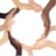

Circulo Mujer nace debido a las necesidades específicas de este colectivo. Circulo Mujer es un espacio hecho por y para mujeres, donde te ofrecemos atención psicológica tanto individual como grupal. Ofrecemos un servicio de orientación e información. Un lugar de encuentro. Un espacio hecho para ti